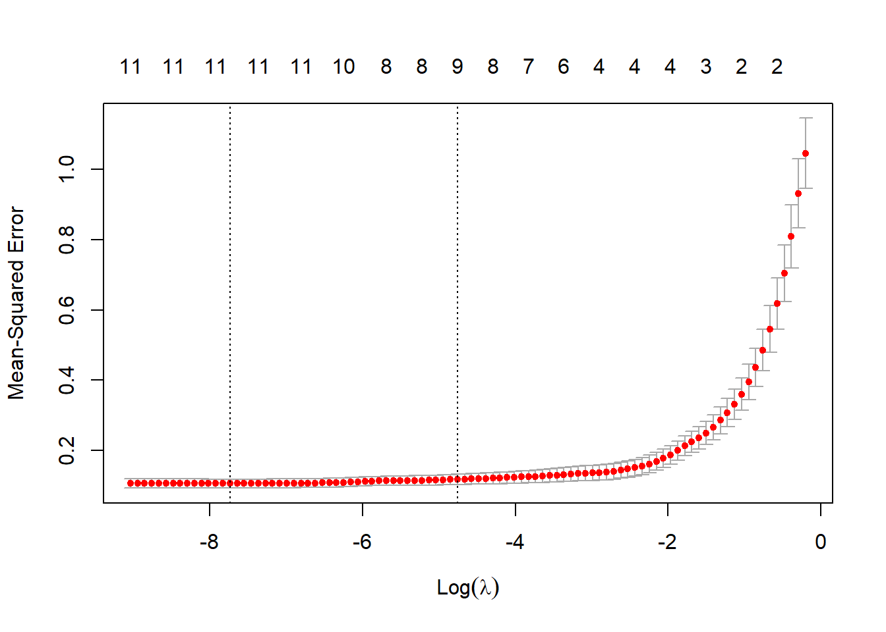
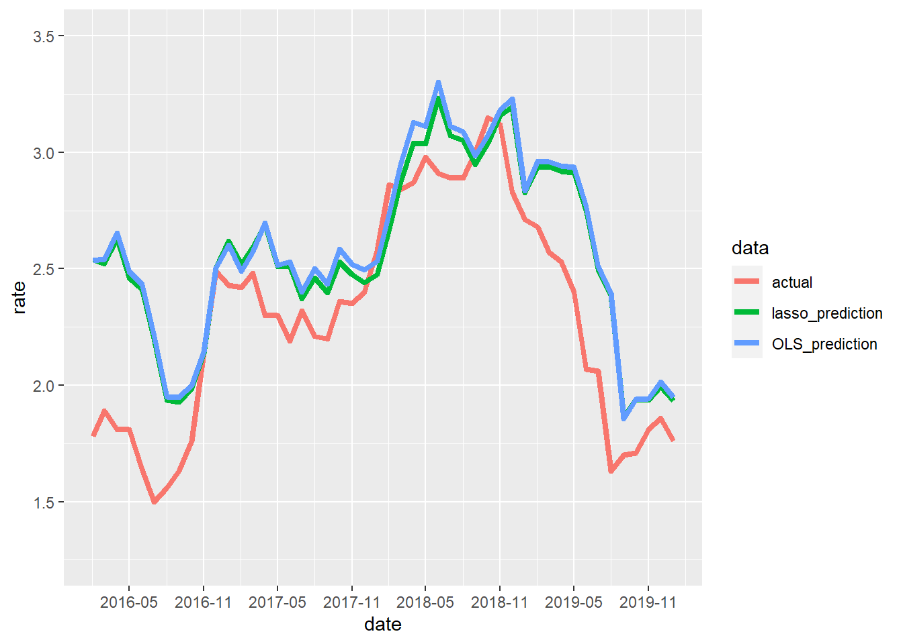
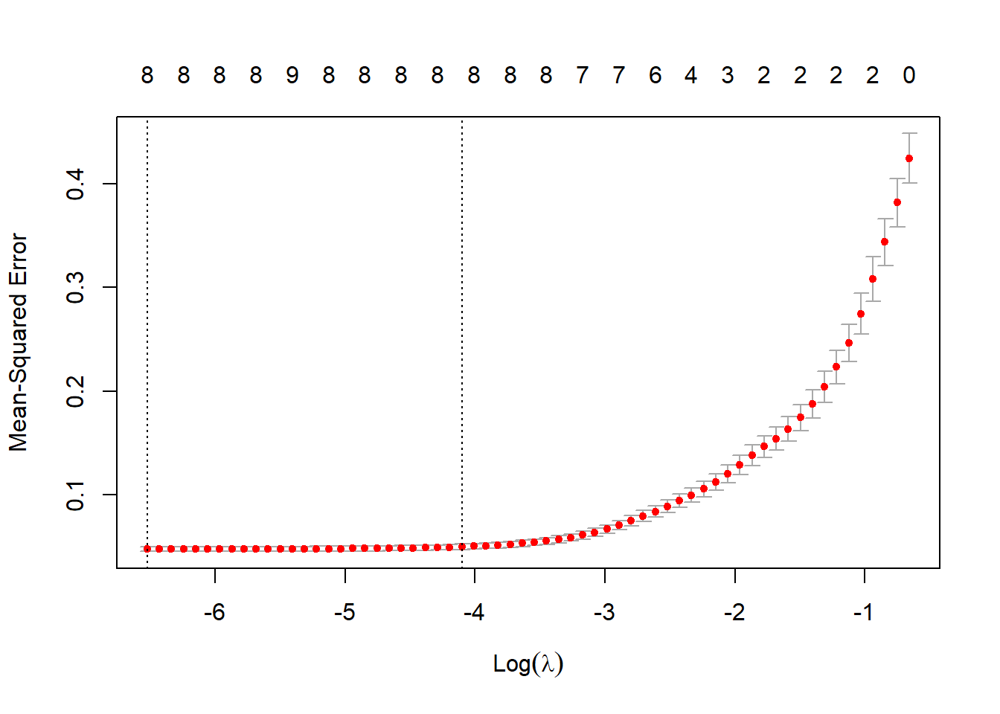
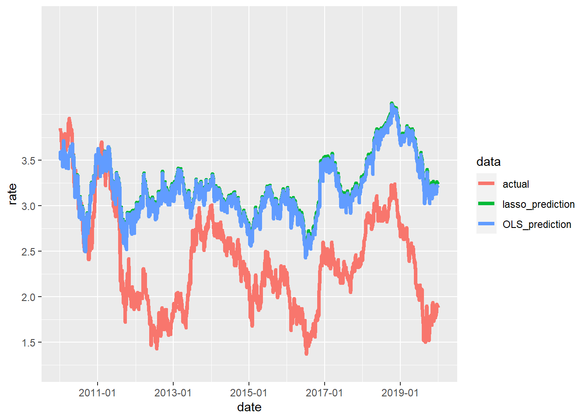

おはこんばんにちは。とある理由で10年物長期金利のフィッティングを行いたいと思いました。というわけで、USデータを用いて解析していきます。まず、データを収集しましょう。quantmodパッケージを用いて、FREDからデータを落とします。getsymbols(キー,from=開始日,src="FRED", auto.assign=TRUE)で簡単にできちゃいます。ちなみにキーはFREDのHPで確認できます。
library(quantmod)
# data name collected
symbols.name <- c("10-Year Treasury Constant Maturity Rate","Effective Federal Funds Rate","
Consumer Price Index for All Urban Consumers: All Items","Civilian Unemployment Rate","3-Month Treasury Bill: Secondary Market Rate","Industrial Production Index","
10-Year Breakeven Inflation Rate","Trade Weighted U.S. Dollar Index: Broad, Goods","
Smoothed U.S. Recession Probabilities","Moody's Seasoned Baa Corporate Bond Yield","5-Year, 5-Year Forward Inflation Expectation Rate","Personal Consumption Expenditures")
# Collect economic data
symbols <- c("GS10","FEDFUNDS","CPIAUCSL","UNRATE","TB3MS","INDPRO","T10YIEM","TWEXBMTH","RECPROUSM156N","BAA","T5YIFRM","PCE")
getSymbols(symbols, from = '1980-01-01', src = "FRED", auto.assign = TRUE)## [1] "GS10" "FEDFUNDS" "CPIAUCSL" "UNRATE"
## [5] "TB3MS" "INDPRO" "T10YIEM" "TWEXBMTH"
## [9] "RECPROUSM156N" "BAA" "T5YIFRM" "PCE"macro_indicator <- merge(GS10,FEDFUNDS,CPIAUCSL,UNRATE,TB3MS,INDPRO,T10YIEM,TWEXBMTH,RECPROUSM156N,BAA,T5YIFRM,PCE)
rm(GS10,FEDFUNDS,CPIAUCSL,UNRATE,TB3MS,INDPRO,T10YIEM,TWEXBMTH,RECPROUSM156N,BAA,T5YIFRM,PCE,USEPUINDXD)データは
こちら
から参照できます。では、推計用のデータセットを作成していきます。被説明変数は10-Year Treasury Constant Maturity Rate(GS10)です。説明変数は以下の通りです。
| 説明変数名 | キー | 代理変数 |
|---|---|---|
| Federal Funds Rate | FEDFUNDS | 短期金利 |
| Consumer Price Index | CPIAUCSL | 物価 |
| Unemployment Rate | UNRATE | 雇用関連 |
| 3-Month Treasury Bill | TB3MS | 短期金利 |
| Industrial Production Index | INDPRO | 景気 |
| Breakeven Inflation Rate | T10YIEM | 物価 |
| Trade Weighted Dollar Index | TWEXBMTH | 為替 |
| Recession Probabilities | RECPROUSM156N | 景気 |
| Moody’s Seasoned Baa Corporate Bond Yield | BAA | リスクプレミアム |
| Inflation Expectation Rate | T5YIFRM | 物価 |
| Personal Consumption Expenditures | PCE | 景気 |
| Economic Policy Uncertainty Index | USEPUINDXD | 政治 |
かなり適当な変数選択ではあるんですが、マクロモデリング的に長期金利ってどうやってモデル化するかというとちゃんとやってない場合が多いです。DSGEでは効率市場仮説に従って10年先までの短期金利のパスをリンクしたものと長期金利が等しくなると定式化するのが院生時代のモデリングでした（マクロファイナンスの界隈ではちゃんとやってそう）。そういうわけで、短期金利を説明変数に加えています。そして、短期金利に影響を与えるであろう物価にかかる指標も3つ追加しました。加えて、景気との相関が強いことはよく知られているので景気に関するデータも追加しました。これらはそもそもマクロモデルでは短期金利は以下のようなテイラールールに従うとモデリングすることが一般的であることが背景にあります。
\[
r_t = \rho r_{t-1} + \alpha \pi_{t} + \beta y_{t}
\]
ここで、\(r_t\)は政策金利（短期金利）、\(\pi_t\)はインフレ率、\(y_t\)はoutputです。\(\rho, \alpha, \beta\)はdeep parameterと呼ばれるもので、それぞれ慣性、インフレ率への金利の感応度、outputに対する感応度を表しています。\(\rho=0,\beta=0\)の時、\(\alpha>=1\)でなければ合理的期待均衡解が得られないことは「テイラーの原理」として有名です。
その他、Corporate bondとの裁定関係も存在しそうなMoody's Seasoned Baa Corporate Bond Yieldも説明変数に追加しています。また、欲を言えばVIX指数と財政に関する指標を追加したいところです。財政に関する指数はQuateryかAnnualyなので今回のようなmonthlyの推計には使用することができません。この部分は最もネックなところです。なにか考え付いたら再推計します。
では、推計に入ります。今回は説明変数が多いのでlasso回帰を行い、有効な変数を絞り込みたいと思います。また、比較のためにOLSもやります。説明変数は被説明変数の1期前の値を使用します。おそらく、1期前でもデータの公表時期によっては翌月の推計に間に合わない可能性もありますが、とりあえずこれでやってみます。
# make dataset
traindata <- na.omit(merge(macro_indicator["2003-01-01::2015-12-31"][,1],stats::lag(macro_indicator["2003-01-01::2015-12-31"][,-1],1)))
testdata <- na.omit(merge(macro_indicator["2016-01-01::"][,1],stats::lag(macro_indicator["2016-01-01::"][,-1],1)))
# fitting OLS
trial1 <- lm(GS10~.,data = traindata)
summary(trial1)##
## Call:
## lm(formula = GS10 ~ ., data = traindata)
##
## Residuals:
## Min 1Q Median 3Q Max
## -0.76208 -0.21234 0.00187 0.21595 0.70493
##
## Coefficients:
## Estimate Std. Error t value Pr(>|t|)
## (Intercept) 14.3578405 4.3524691 3.299 0.001226 **
## FEDFUNDS -0.2011132 0.1438774 -1.398 0.164335
## CPIAUCSL -0.0702011 0.0207761 -3.379 0.000938 ***
## UNRATE -0.2093502 0.0796052 -2.630 0.009477 **
## TB3MS 0.2970160 0.1413796 2.101 0.037410 *
## INDPRO -0.0645376 0.0260343 -2.479 0.014339 *
## T10YIEM 1.1484487 0.1769925 6.489 1.32e-09 ***
## TWEXBMTH -0.0317345 0.0118155 -2.686 0.008091 **
## RECPROUSM156N -0.0099083 0.0021021 -4.713 5.72e-06 ***
## BAA 0.7793520 0.0868628 8.972 1.49e-15 ***
## T5YIFRM -0.4551318 0.1897695 -2.398 0.017759 *
## PCE 0.0009087 0.0002475 3.672 0.000339 ***
## ---
## Signif. codes: 0 '***' 0.001 '**' 0.01 '*' 0.05 '.' 0.1 ' ' 1
##
## Residual standard error: 0.2981 on 143 degrees of freedom
## Multiple R-squared: 0.9203, Adjusted R-squared: 0.9142
## F-statistic: 150.1 on 11 and 143 DF, p-value: < 2.2e-16自由度修正済み決定係数高めですね。2015/12/31までのモデルを使って、アウトサンプルのデータ(2016/01/01~)を予測し、平均二乗誤差を計算します。
est.OLS.Y <- predict(trial1,testdata[,-1])
Y <- as.matrix(testdata[,1])
mse.OLS <- sum((Y - est.OLS.Y)^2) / length(Y)
mse.OLS## [1] 0.1431734次にlasso回帰です。Cross Validationを行い、\(\lambda\)を決めるglmnetパッケージのcv.glmnet関数を使用します。
# fitting lasso regression
library(glmnet)
trial2 <- cv.glmnet(as.matrix(traindata[,-1]),as.matrix(traindata[,1]),family="gaussian",alpha=1)
plot(trial2)
trial2$lambda.min## [1] 0.000436523coef(trial2,s=trial2$lambda.min)## 12 x 1 sparse Matrix of class "dgCMatrix"
## 1
## (Intercept) 12.0180676188
## FEDFUNDS -0.1041665345
## CPIAUCSL -0.0574470880
## UNRATE -0.1919723880
## TB3MS 0.2110222475
## INDPRO -0.0610115260
## T10YIEM 1.1688912397
## TWEXBMTH -0.0242324285
## RECPROUSM156N -0.0095154487
## BAA 0.7600115062
## T5YIFRM -0.4575241038
## PCE 0.0007486169Unemployment Rate、3-Month Treasury Bill、Breakeven Inflation Rate、Moody's Seasoned Baa Corporate Bond Yield、Inflation Expectation Rateの回帰係数が大きくなるという結果ですね。失業率以外は想定内の結果です。ただ、今回の結果を見る限り景気との相関は低そうです（逆向きにしか効かない？）。MSEを計算します。
est.lasso.Y <- predict(trial2, newx = as.matrix(testdata[,-1]), s = trial2$lambda.min, type = 'response')
mse.lasso <- sum((Y - est.lasso.Y)^2) / length(Y)
mse.lasso## [1] 0.1318541lasso回帰のほうが良い結果になりました。lasso回帰で計算した予測値と実績値を時系列プロットしてみます。
library(tidyverse)
ggplot(gather(data.frame(actual=Y[,1],lasso_prediction=est.lasso.Y[,1],OLS_prediction=est.OLS.Y,date=as.POSIXct(rownames(Y))),key=data,value=rate,-date),aes(x=date,y=rate, colour=data)) +
geom_line(size=1.5) +
scale_x_datetime(breaks = "6 month",date_labels = "%Y-%m") +
scale_y_continuous(breaks=c(1,1.5,2,2.5,3,3.5),limits = c(1.25,3.5))
方向感はいい感じです。一方で、2016年1月からや2018年12月以降の急激な金利低下は予測できていません。この部分については何か変数を考えるorローリング推計を実施する、のいずれかをやってみないと精度が上がらなそうです。
月次での解析に加えて日次での解析もやりたいとおもいます。日次データであればデータの公表は市場が閉まり次第の場合が多いので、いわゆるjagged edgeの問題が起こりにくいと思います。まずは日次データの収集から始めます。
# data name collected
symbols.name <- c("10-Year Treasury Constant Maturity Rate","Effective Federal Funds Rate","
6-Month London Interbank Offered Rate (LIBOR), based on U.S. Dollar","NASDAQ Composite Index","3-Month Treasury Bill: Secondary Market Rate","Economic Policy Uncertainty Index for United States","
10-Year Breakeven Inflation Rate","Trade Weighted U.S. Dollar Index: Broad, Goods","Moody's Seasoned Baa Corporate Bond Yield","5-Year, 5-Year Forward Inflation Expectation Rate")
# Collect economic data
symbols <- c("DGS10","DFF","USD6MTD156N","NASDAQCOM","DTB3","USEPUINDXD","T10YIE","DTWEXB","DBAA","T5YIFR")
getSymbols(symbols, from = '1980-01-01', src = "FRED", auto.assign = TRUE)## [1] "DGS10" "DFF" "USD6MTD156N" "NASDAQCOM" "DTB3"
## [6] "USEPUINDXD" "T10YIE" "DTWEXB" "DBAA" "T5YIFR"NASDAQCOM.r <- ROC(na.omit(NASDAQCOM))
macro_indicator.d <- merge(DGS10,DFF,USD6MTD156N,NASDAQCOM.r,DTB3,USEPUINDXD,T10YIE,DTWEXB,DBAA,T5YIFR)
rm(DGS10,DFF,USD6MTD156N,NASDAQCOM,NASDAQCOM.r,DTB3,USEPUINDXD,T10YIE,DTWEXB,DBAA,T5YIFR)次にデータセットを構築します。学習用と訓練用にデータを分けます。実際の予測プロセスを考え、2営業日前のデータを説明変数に用いています。
# make dataset
traindata.d <- na.omit(merge(macro_indicator.d["1980-01-01::2010-12-31"][,1],stats::lag(macro_indicator.d["1980-01-01::2010-12-31"][,-1],2)))
testdata.d <- na.omit(merge(macro_indicator.d["2010-01-01::"][,1],stats::lag(macro_indicator.d["2010-01-01::"][,-1],2)))
# fitting OLS
trial1.d <- lm(DGS10~.,data = traindata.d)
summary(trial1.d)##
## Call:
## lm(formula = DGS10 ~ ., data = traindata.d)
##
## Residuals:
## Min 1Q Median 3Q Max
## -0.82445 -0.12285 0.00469 0.14332 0.73789
##
## Coefficients:
## Estimate Std. Error t value Pr(>|t|)
## (Intercept) -3.5051208 0.1690503 -20.734 < 2e-16 ***
## DFF 0.0818269 0.0239371 3.418 0.000653 ***
## USD6MTD156N -0.0135771 0.0233948 -0.580 0.561799
## NASDAQCOM -0.3880217 0.4367334 -0.888 0.374483
## DTB3 0.1227984 0.0280283 4.381 1.29e-05 ***
## USEPUINDXD -0.0006611 0.0001086 -6.087 1.58e-09 ***
## T10YIE 0.6980971 0.0355734 19.624 < 2e-16 ***
## DTWEXB 0.0270128 0.0012781 21.135 < 2e-16 ***
## DBAA 0.2988122 0.0182590 16.365 < 2e-16 ***
## T5YIFR 0.3374944 0.0381111 8.856 < 2e-16 ***
## ---
## Signif. codes: 0 '***' 0.001 '**' 0.01 '*' 0.05 '.' 0.1 ' ' 1
##
## Residual standard error: 0.2173 on 1114 degrees of freedom
## Multiple R-squared: 0.8901, Adjusted R-squared: 0.8892
## F-statistic: 1002 on 9 and 1114 DF, p-value: < 2.2e-16依然決定係数は高めです。
est.OLS.Y.d <- predict(trial1.d,testdata.d[,-1])
Y.d <- as.matrix(testdata.d[,1])
mse.OLS.d <- sum((Y.d - est.OLS.Y.d)^2) / length(Y.d)
mse.OLS.d## [1] 0.8003042次にlasso回帰です。CVで\(\lambda\)を決定。
# fitting lasso regression
trial2.d <- cv.glmnet(as.matrix(traindata.d[,-1]),as.matrix(traindata.d[,1]),family="gaussian",alpha=1)
plot(trial2.d)
trial2.d$lambda.min## [1] 0.001472377coef(trial2.d,s=trial2.d$lambda.min)## 10 x 1 sparse Matrix of class "dgCMatrix"
## 1
## (Intercept) -3.4186530904
## DFF 0.0707022021
## USD6MTD156N .
## NASDAQCOM -0.2675513858
## DTB3 0.1204092358
## USEPUINDXD -0.0006506183
## T10YIE 0.6915446819
## DTWEXB 0.0270389569
## DBAA 0.2861031504
## T5YIFR 0.3376304446liborの係数値が0になりました。MSEはOLSの方が高い結果に。
est.lasso.Y.d <- predict(trial2.d, newx = as.matrix(testdata.d[,-1]), s = trial2.d$lambda.min, type = 'response')
mse.lasso.d <- sum((Y.d - est.lasso.Y.d)^2) / length(Y.d)
mse.lasso.d## [1] 0.8378427予測値をプロットします。
ggplot(gather(data.frame(actual=Y.d[,1],lasso_prediction=est.lasso.Y.d[,1],OLS_prediction=est.OLS.Y.d,date=as.POSIXct(rownames(Y.d))),key=data,value=rate,-date),aes(x=date,y=rate, colour=data)) +
geom_line(size=1.5) +
scale_x_datetime(breaks = "2 year",date_labels = "%Y-%m") +
scale_y_continuous(breaks=c(1,1.5,2,2.5,3,3.5),limits = c(1.25,5))
月次と同じく、OLSとlassoで予測値に差はほとんどありません。なかなかいい感じに変動を捉えることができていますが、2011年のUnited States federal government credit-rating downgradesによる金利低下や2013年の景気回復に伴う金利上昇は捉えることができていません。日次の景気指標はPOSデータくらいしかないんですが、強いて言うなら最近使用した夜間光の衛星画像データなんかは使えるかもしれません。時間があればやってみます。とりあえず、いったんこれでこの記事は終わりたいと思います。ここまで読み進めていただき、ありがとうございました。